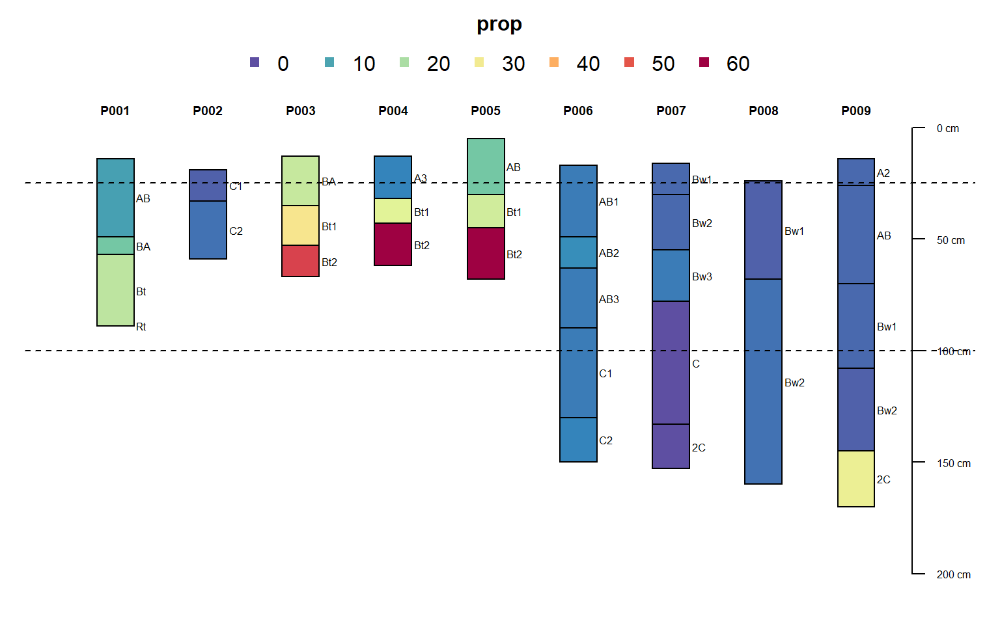
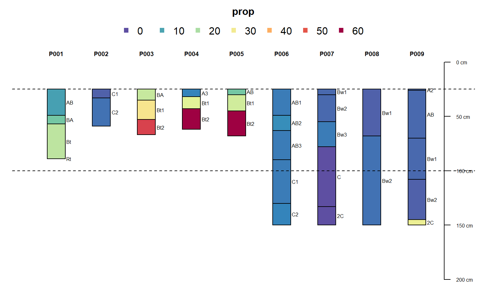
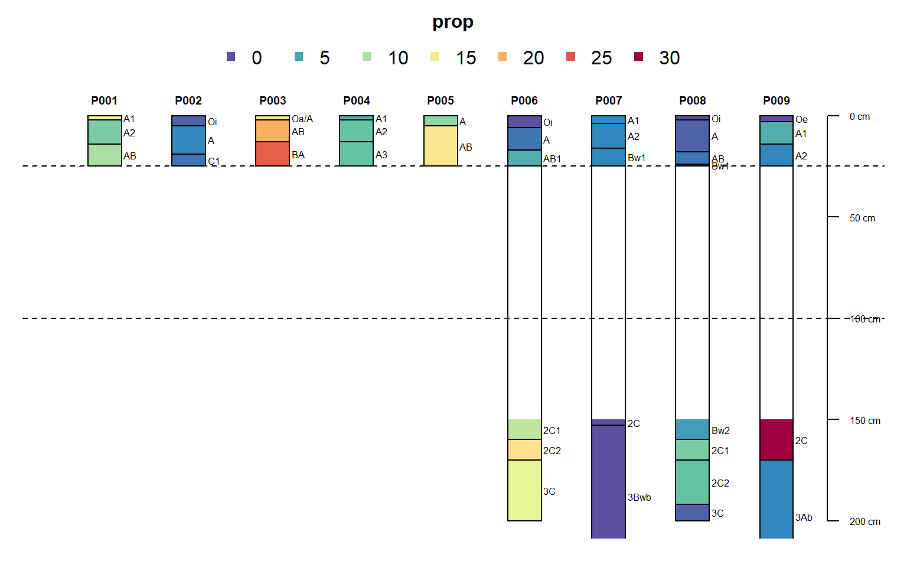
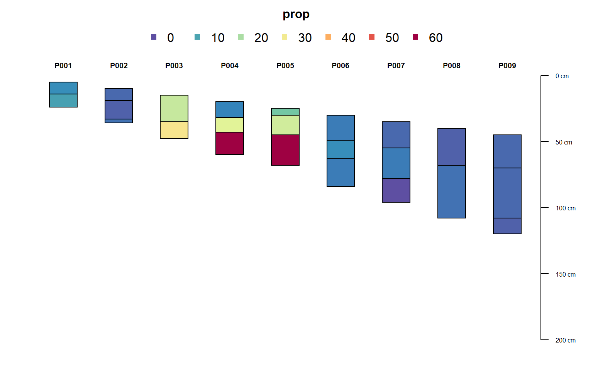

R/glom.R
glom-SoilProfileCollection-method.RdMake a "clod" of horizons from a SoilProfileCollection given a point or a depth interval to intersect. The interval [z1,z2] may be profile-specific (equal in length to p), or may be recycled over all profiles (if boundaries are length 1). For "point" intersection, z2 may be left as the default value NULL.
# S4 method for SoilProfileCollection glom( p, z1, z2 = NULL, ids = FALSE, df = FALSE, truncate = FALSE, invert = FALSE, modality = "all" )
| p | a SoilProfileCollection |
|---|---|
| z1 | numeric vector of top depth to intersect horizon (required). Can be an expression involving |
| z2 | numeric vector bottom depth of intersection interval (optional). Can also be an expression involving |
| ids | return only horizon IDs? default: |
| df | return a data.frame, by intersection with |
| truncate | truncate horizon top and bottom depths to |
| invert | get horizons outside the interval |
| modality | default: |
a SoilProfileCollection, data.frame, or a vector of horizon IDs. NULL if no result.
"To glom" is "to steal" or to "become stuck or attached to". The word is related to the compound "glomalin", which is a glycoprotein produced by mycorrhizal fungi in soil.
The full depth range of horizons included within the interval are returned (a "ragged" SoilProfileCollection) unless the truncate argument is set as TRUE. Horizon intersection is based on unique ID hzidname(spc) and depth range of interest. Profiles that lack data in the range of interest will be dropped from the resulting SoilProfileCollection.
If inverting results with invert, it is possible that thick horizons (whose boundaries span wider than the specified interval) will be split into two horizons, where previously they were one. This may make the results from ids = TRUE different from what you expect, as they will be based on a profile with an "extra" horizon and re-calculated unique horizon ID (hzidname(spc)) "hzID".
Andrew G. Brown
data(sp1, package = 'aqp') depths(sp1) <- id ~ top + bottom site(sp1) <- ~ group p <- glom(sp1, 25, 150) # 28 horizons nrow(p)#> [1] 32#> [1] 32## glom(..., truncate = TRUE, invert = TRUE) p3 <- glom(sp1, 25, 150, truncate = TRUE, invert = TRUE) # 45 horizons nrow(p3)#> [1] 40## profile-specific interval, using expressions evaluated within sp1@site # calculate some new site-level variables containing target interval sp1$glom_top <- (1:9) * 10 sp1$glom_bottom <- 10 + sp1$glom_top # glom evaluates non-standard expressions using siteNames(sp1) column names p4 <- glom(sp1, glom_top / 2, glom_bottom * 1.2, truncate = TRUE) # inspect graphically par(mar = c(1,1,3,1)) plot(p4, color = "prop", max.depth = 200)